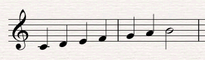
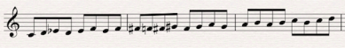
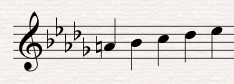
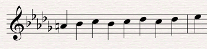
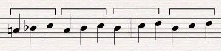
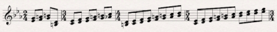
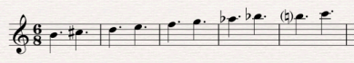
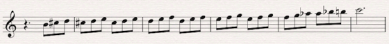
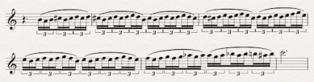

<?xml version="1.0" encoding="UTF-8"?><rss version="2.0"
	xmlns:content="http://purl.org/rss/1.0/modules/content/"
	xmlns:wfw="http://wellformedweb.org/CommentAPI/"
	xmlns:dc="http://purl.org/dc/elements/1.1/"
	xmlns:atom="http://www.w3.org/2005/Atom"
	xmlns:sy="http://purl.org/rss/1.0/modules/syndication/"
	xmlns:slash="http://purl.org/rss/1.0/modules/slash/"
	xmlns:itunes="http://www.itunes.com/dtds/podcast-1.0.dtd"
xmlns:rawvoice="http://www.rawvoice.com/rawvoiceRssModule/"
xmlns:googleplay="http://www.google.com/schemas/play-podcasts/1.0"
>

<channel>
	<title>Ryan Leach &#8211; SCOREcastOnline.com</title>
	<atom:link href="." rel="self" type="application/rss+xml" />
	<link>http://www.scorecastonline.com</link>
	<description>Global Community for the Professional Media Composer</description>
	<lastBuildDate>Thu, 17 May 2018 18:11:42 +0000</lastBuildDate>
	<language>en-US</language>
	<sy:updatePeriod>hourly</sy:updatePeriod>
	<sy:updateFrequency>1</sy:updateFrequency>
	<generator>https://wordpress.org/?v=4.9.8</generator>
<!-- podcast_generator="Blubrry PowerPress/7.2" mode="advanced" feedslug="feed" Blubrry PowerPress Podcasting plugin for WordPress (https://www.blubrry.com/powerpress/) -->
	<itunes:summary>Global Community for the Professional Media Composer</itunes:summary>
	<itunes:author>Ryan Leach &#8211; SCOREcastOnline.com</itunes:author>
	<itunes:image href="../../../wp-content/plugins/powerpress/itunes_default.jpg" />
	<itunes:subtitle>Global Community for the Professional Media Composer</itunes:subtitle>
	<image>
		<title>Ryan Leach &#8211; SCOREcastOnline.com</title>
		<url>../../../wp-content/uploads/powerpress/sig-SCO.jpg</url>
		<link>http://www.scorecastonline.com</link>
	</image>
<site xmlns="com-wordpress:feed-additions:1">29563098</site>	<item>
		<title>How to Create Tension with Climbing Scales</title>
		<link>../../../2012/07/23/how-to-create-tension-with-climbing-scales/</link>
		<comments>../../../2012/07/23/how-to-create-tension-with-climbing-scales/#comments</comments>
		<pubDate>Mon, 23 Jul 2012 13:00:42 +0000</pubDate>
		<dc:creator><![CDATA[Ryan Leach]]></dc:creator>
				<category><![CDATA[Composition]]></category>
		<category><![CDATA[Latest Resources]]></category>

		<guid isPermaLink="false">../../../?p=1595</guid>
		<description><![CDATA[An examination into the boring old scale, and how it can actually be exploited to create tension in your music.]]></description>
				<content:encoded><![CDATA[<p>[Photo by <a href="http://www.flickr.com/photos/bohman/" target="_blank">Linus Bohman</a>]</p>
<p>Among the many primary functions of film music, tension is near the top of the list. Wether it&#8217;s to generate feelings of suspense, anticipation, or even a false sense of danger, creating tension is a major part of our work as film composers.</p>
<p>In this article I&#8217;ll discuss one of the tools you can add to your bag of tricks for creating tension, the technique of stretching out a scale.</p>
<h2>Expectation</h2>
<p>Tension is aroused when there is a conflict between what we expect to happen and what actually happens. In music one of the easiest ways to do this is to set up an expectation, but then delay it&#8217;s resolution.</p>
<p>I&#8217;m reminded of the scene from Who Framed Roger Rabbit in which the villain is trying to get Roger Rabbit to come out of his hiding place. He knocks out the rhythm to the first part of &#8220;Shave and a Haircut&#8221;:</p>
<p><iframe src="http://www.youtube.com/embed/jIBK7UxRTqE#t=5m49s" frameborder="0" width="420" height="315"></iframe></p>
<p>&#8220;No toon can resist the old Shave and a Haircut trick!&#8221;</p>
<p>Roger Rabbit can&#8217;t help himself, the tension is just UNBEARABLE! He has to finish the phrase, it&#8217;s driving him insane not to, and thus he comes out of hiding and is caught by the throat!</p>
<p>There are many ways to establish expectations in your listener&#8217;s ear, including using predictable melodies, setting up common cadences, creating patterns in the music, and using scales. Let&#8217;s now take a look at how we can use scales to set up expectations and delay resolution.</p>
<h2>Scales</h2>
<p>Many people find scales boring because they are so predictable. But that&#8217;s actually what is so great about them! We want to take advantage of that very predictability. Being a backbone of most Western music, even non-musicians have expectations about how scales resolve and what they generally sound like.</p>
<p>We already looked at how leaving off an expected resolution can drive you nuts with the Shave and a Haircut example. Consider this even simpler example:</p>
<p><iframe width="100%" height="166" scrolling="no" frameborder="no" src="http://w.soundcloud.com/player/?url=http%3A%2F%2Fapi.soundcloud.com%2Ftracks%2F50117271%3Fsecret_token%3Ds-swUX4&#038;show_artwork=true&#038;secret_url=true"></iframe></p>
<p><a href="../../../?attachment_id=1596" rel="attachment wp-att-1596"></a></p>
<p>If you&#8217;re like most musicians, the lack of resolution to the tonic will really get under your skin!</p>
<p>A scale climbing and not quite reaching home is great for demonstration, but it feels a bit rudimentary in a musical context. A more musical approach, and a very common one, is to stretch out the scale by repeating notes, rising a little bit and then backing back down and starting over. I&#8217;ll use a half-diminished scale here for some added darkness:</p>
<p><iframe width="100%" height="166" scrolling="no" frameborder="no" src="http://w.soundcloud.com/player/?url=http%3A%2F%2Fapi.soundcloud.com%2Ftracks%2F50117294%3Fsecret_token%3Ds-BL88c&#038;show_artwork=true&#038;secret_url=true"></iframe></p>
<p><a href="../../../?attachment_id=1597" rel="attachment wp-att-1597"></a></p>
<p>The tension comes from two different places here. First of all, we expect the scale to just keep climbing in an upward direction, and so when it jumps back down we are a bit surprised.</p>
<p>Secondly, we are never really sure when it&#8217;s going to stop, and so tension is created by the uncertainty of just how high this scale is going to go. We keep expecting it to resolve but it never does.</p>
<h2>Examples from the Repertoire</h2>
<h3>Barber&#8217;s Adagio for Strings</h3>
<p>An example very similar to the one we just looked at can be found in the opening to Samuel Barber&#8217;s Adagio for Strings.</p>
<p><iframe src="http://www.youtube.com/embed/RRMz8fKkG2g" frameborder="0" width="420" height="315"></iframe></p>
<p><a href="../../../?attachment_id=1598" rel="attachment wp-att-1598"></a></p>
<p>Essentially all he is doing is climbing from A natural up to Eb, but by stretching those 5 notes into 15 he creates an incredible feeling of tension.</p>
<p><a href="../../../?attachment_id=1599" rel="attachment wp-att-1599"></a></p>
<p>He stretches the scale out in two ways. First, he has a pattern of going up a third and down a second:</p>
<p><a href="../../../?attachment_id=1600" rel="attachment wp-att-1600"></a></p>
<p>Then he stretches it out further by repeating each climb up a third before moving to the descent of a second:</p>
<p><a href="../../../?attachment_id=1601" rel="attachment wp-att-1601"></a></p>
<p>Even after the Eb it feels like the pattern could just keep on climbing forever, but he gives us a break and rests on the C. A perfect reminder that all tension and no resolution would soon become tiresome to listen to!</p>
<h3>Little Tom Thumb</h3>
<p>The second movement of Ravel&#8217;s Mother Goose Suite, Little Tom Thumb, starts off with a similar technique. In this case, however, Ravel manipulates the tension in two different ways.</p>
<p><iframe src="http://www.youtube.com/embed/-NkKAD-zu64" frameborder="0" width="420" height="315"></iframe></p>
<p><a href="../../../?attachment_id=1602" rel="attachment wp-att-1602"></a></p>
<p>The first noticeable difference from the Barber is that he uses longer stretches of the scale. Instead of climbing only three notes at a time, Ravel climbs as much as 10 notes in his longest segment.</p>
<p>An even more significant difference is that every stretch of the scale is longer than the one before it. This is an incredibly useful technique for creating tension, as the climbing scale just keeps getting longer and longer and longer, stretching out the climb more and more and never quite reaching a feeling of resolution.</p>
<p>Only after the melody comes in and finally jumps down a third onto a quarter note at bar 5 do we actually feel a moment of resolved tension.</p>
<p>I am reminded of the opening motif from John Williams&#8217; score to Catch Me If You Can. The opening phrase backtracks and develops just a tiny bit further each time. Every little extra development teases us into expecting more and more.</p>
<p><iframe src="http://www.youtube.com/embed/gaLDyrun_Cc" frameborder="0" width="560" height="315"></iframe></p>
<h3>Fawkes the Phoenix</h3>
<p>Speaking of John Williams, our last example comes from his cue Fawkes the Phoenix from the Harry Potter and the Chamber of Secrets score. It&#8217;s a great example of how to use the climbing scale as a modulating sequence.</p>
<p>The example comes from about 1:22 into the track, in which he uses a climbing scale pattern to take us from A major to C major.</p>
<p><iframe width="420" height="315" src="http://www.youtube.com/embed/WPjBnBdq5Os" frameborder="0" allowfullscreen></iframe></p>
<p>The basic climbing scale he uses is this:</p>
<p><iframe width="100%" height="166" scrolling="no" frameborder="no" src="http://w.soundcloud.com/player/?url=http%3A%2F%2Fapi.soundcloud.com%2Ftracks%2F50117330%3Fsecret_token%3Ds-RIFe3&#038;show_artwork=true&#038;secret_url=true"></iframe></p>
<p><a href="../../../?attachment_id=1603" rel="attachment wp-att-1603"></a></p>
<p>He uses a similar pattern to the &#8220;up a third, down a second&#8221; pattern that we saw in the Adagio for Strings. It&#8217;s doubled in length to be &#8220;up a third, down a second, up a third, down a third&#8221;:</p>
<p><iframe width="100%" height="166" scrolling="no" frameborder="no" src="http://w.soundcloud.com/player/?url=http%3A%2F%2Fapi.soundcloud.com%2Ftracks%2F50117356%3Fsecret_token%3Ds-gyqFs&#038;show_artwork=true&#038;secret_url=true"></iframe></p>
<p><a href="../../../?attachment_id=1604" rel="attachment wp-att-1604"></a></p>
<p>Notice how the energy increases towards the end when he stops repeating the patterns and moves into a faster climb of the scale.</p>
<p>Finally he adds excitement to the pattern in the violins by embellishing with neighbor and passing tones:</p>
<p><iframe width="100%" height="166" scrolling="no" frameborder="no" src="http://w.soundcloud.com/player/?url=http%3A%2F%2Fapi.soundcloud.com%2Ftracks%2F50117380%3Fsecret_token%3Ds-js5Ez&#038;show_artwork=true&#038;secret_url=true"></iframe></p>
<p><a href="../../../?attachment_id=1605" rel="attachment wp-att-1605"></a></p>
<p>The result is an exhilarating climb that feels incredibly tense until the resolution on C, which in contrast to the build feels quite refreshing!</p>
<h2>Conclusion</h2>
<p>You may have terrible memories of being forced by your music teacher to practice your scales, and many of you may have resented the seemingly lack of point in the exercise.</p>
<p>But with some simple manipulations, we&#8217;ve just seen that the boring old scale can actually provide us with amazing potential for creating, expanding and developing tension.</p>
 <!-- WP Biographia v3.3.2 -->
<div class="wp-biographia-container-top" style="background-color: #eadcdc; border-top: 4px solid #000000;"><div class="wp-biographia-pic" style="height:100px; width:100px;"></div><div class="wp-biographia-text"><h3><a href=".." title="Ryan Leach">Ryan Leach</a></h3><p>As an 8 year old growing up in South Australia, <b>Ryan Leach</b> started studying guitar so that he could play Beatles songs, which marked the beginning of a lifelong passion for music. Now an award winning composer for film and TV, his music has been heard on every major network and clients include MTV and Disney. Before branching out as a freelance composer, Ryan earned a degree in Film Scoring from Berklee College of Music and worked as assistant to veteran composer Michael Levine at Remote Control Productions. He has scored a dozen feature films including <i>Pastor Shepherd</i> starring Danny Trejo (Robert Rodriguez’s Machete), Serbian film <i>Skinning</i> co-starring Bojana Novakovic (M. Night Shyamalan’s Devil), and <i>Anacapa</i> by writer/director Nicholas Tolkien.  In 2010 Ryan won Best Original Score from the Maverick Movie Awards for his score to <i>Devils Racecourse</i>. For more information on Ryan's work, visit him at his <a href="http://ryanleach.com">official website</a> and at <a href="http://www.imdb.com/name/nm1999695/">IMDb.com</a>.</p><div class="wp-biographia-links"><small><ul class="wp-biographia-list wp-biographia-list-icon"><li><a href="http://www.ryanleach.com" target="_blank" title="Ryan Leach On The Web" class="wp-biographia-link-icon"></a></li><li><a href="http://twitter.com/rwmleach" target="_blank" title="Ryan Leach On Twitter" class="wp-biographia-link-icon"></a></li><li><a href=".." target="_blank" title="More Posts By Ryan Leach" class="wp-biographia-link-icon"></a></li></ul></small></div></div></div><!-- WP Biographia v3.3.2 -->
]]></content:encoded>
			<wfw:commentRss>../../../2012/07/23/how-to-create-tension-with-climbing-scales/feed/</wfw:commentRss>
		<slash:comments>12</slash:comments>
	<post-id xmlns="com-wordpress:feed-additions:1">1595</post-id>	</item>
		<item>
		<title>Value Studies: A Painter&#8217;s Technique for Composers</title>
		<link>../../../2012/06/04/value-studies-a-painters-technique-for-composers/</link>
		<comments>../../../2012/06/04/value-studies-a-painters-technique-for-composers/#comments</comments>
		<pubDate>Mon, 04 Jun 2012 13:00:00 +0000</pubDate>
		<dc:creator><![CDATA[Ryan Leach]]></dc:creator>
				<category><![CDATA[Composition]]></category>
		<category><![CDATA[Latest Resources]]></category>

		<guid isPermaLink="false">../../../?p=1557</guid>
		<description><![CDATA[How the Value Study, a useful technique from the world of painting, can be applied to the art of Composition.]]></description>
				<content:encoded><![CDATA[<p>[Thank you to <a href="http://davidmkessler.com" target="_blank">David Kessler</a> for permission to use the fantastic images and the initial inspiration.]</p>
<p>Visual artists have it great. The number of books, techniques, methods and overall resources for developing your craft as a painter or illustrator are astounding. The available resources for learning how to compose music feel almost non-existent in comparison. (I&#8217;m not talking about the individual skills of harmony, orchestration, etc. I am referring to a comprehensive method for actually putting it all together.)</p>
<p>But although the methods for painting and composing are not perfectly relatable, we can borrow many of the lessons from the visual arts and adapt them to writing music.</p>
<p>The &#8220;value study&#8221; is a technique I learned about recently and I immediately wondered about how the same principle could be applied to our craft.</p>
<h2>What is a Value Study?</h2>
<p>A value study is a middle step between a sketch and a finished work. Artist David Kessler has written a <a href="http://davidmkessler.com/blog/23789/value-studies-the-artists-essential-tool" target="_blank">fantastic article</a> on the subject and I strongly encourage you to read it to get a thorough understanding of the concept.</p>
<p>A &#8220;value&#8221; is a degree of shading, with different values referring to different degrees of light and dark. The idea is to take color out of the equation and focus on the more fundamental aspects of contrast. Before getting all fancy with colors and textures, you work out the focus points of the composition and check for a good balance between the different shades.</p>
<p>I&#8217;m a big believer in sketches and working out fundamental elements before moving on to details, and the value study is a great way to consciously work out your basic structural points before getting bogged down with surface level details.</p>
<h2>What does this have to do with music?</h2>
<p>The main principle to borrow from the artist&#8217;s value study is not literally &#8220;light and dark&#8221;, but the absence of color. In our case, we can consider orchestration and timbre to be the equivalent of a painter&#8217;s color palette.</p>
<p>When you strip away the color of instrumentation, you are left with your bare elements. Melody, harmony, form. Variation, unity. Do they hold up? If your big orchestral piece was played on solo piano, or even by a synth with a sine wave patch, would it still be compelling? When you take away that repetitive ostinato pattern in the background, is it still interesting?</p>
<h2>Dynamics as the Composer&#8217;s Value</h2>
<p>A near cousin to light and dark in music is loud and quiet; our version of planning the shading is planning dynamics.</p>
<p>In his example, David Kessler used four values of light and dark:</p>
<ol>
<li>White (or light)</li>
<li>Light midvalue</li>
<li>Dark midvalue</li>
<li>Dark</li>
</ol>
<p>For our purposes, I suggest we use five dynamic layers:</p>
<ol>
<li>p</li>
<li>mp</li>
<li>mf</li>
<li>f</li>
<li>ff</li>
</ol>
<p>We can take a slightly different route from painting. Rather than using white as the base and darkening in from there, I think it makes more sense to start with mf, a middle dynamic, as our starting point and then going up or down from there.</p>
<h2>A Composer&#8217;s Value Study &#8211; Step By Step</h2>
<p>Here is a proposed step by step approach you can use to apply the concept of the value study to composing music. Bear in mind that every composition is unique, and obviously the more complex the piece the less basic this process might be. But take this general idea as a starting off point for approaching your own work.</p>
<ol>
<li>Take your bare-bones sketch of the composition, perhaps just melody with chord changes or a basic accompaniment, with the entire piece at mf.</li>
<li>Decide on your next level values, meaning decide where you want things to be quieter and where you want them to be louder. Place f and mp.</li>
<li>Decide on your extreme values, ff and p. Keep in mind that your extreme levels will shine brighter the more sparingly you use them. So perhaps find just one special moment for each extreme.</li>
<li>Finally, add nuance and subtlety . Crescendos, decrescendos, sfz, etc.</li>
<li>Of course not every piece requires every shade of dynamics, and some pieces may even be better suited for no dynamic changes at all.</li>
</ol>
<h2>Conclusion</h2>
<p>To quote David Kessler&#8217;s conclusion, &#8220;<em>Remember this is not a finished painting, only a tool. Don&#8217;t spend time &#8220;staying inside the lines&#8221;. Concentrate on distinguishing the shapes and developing contrast.</em>&#8221;</p>
<p>The same principle could be applied to texture quite easily, with varying degrees of density. Perhaps a piece could be assessed by the number of voices present at any given time.</p>
<p>However you apply the idea, taking time to zoom out and look at the big picture is always a wise move.</p>
<p>What do you think? Have you ever noticed similarities between painting and writing music? Or do you think they are too distantly related to share meaningful lessons? Share your thoughts in the comments!</p>
 <!-- WP Biographia v3.3.2 -->
<div class="wp-biographia-container-top" style="background-color: #eadcdc; border-top: 4px solid #000000;"><div class="wp-biographia-pic" style="height:100px; width:100px;"></div><div class="wp-biographia-text"><h3><a href=".." title="Ryan Leach">Ryan Leach</a></h3><p>As an 8 year old growing up in South Australia, <b>Ryan Leach</b> started studying guitar so that he could play Beatles songs, which marked the beginning of a lifelong passion for music. Now an award winning composer for film and TV, his music has been heard on every major network and clients include MTV and Disney. Before branching out as a freelance composer, Ryan earned a degree in Film Scoring from Berklee College of Music and worked as assistant to veteran composer Michael Levine at Remote Control Productions. He has scored a dozen feature films including <i>Pastor Shepherd</i> starring Danny Trejo (Robert Rodriguez’s Machete), Serbian film <i>Skinning</i> co-starring Bojana Novakovic (M. Night Shyamalan’s Devil), and <i>Anacapa</i> by writer/director Nicholas Tolkien.  In 2010 Ryan won Best Original Score from the Maverick Movie Awards for his score to <i>Devils Racecourse</i>. For more information on Ryan's work, visit him at his <a href="http://ryanleach.com">official website</a> and at <a href="http://www.imdb.com/name/nm1999695/">IMDb.com</a>.</p><div class="wp-biographia-links"><small><ul class="wp-biographia-list wp-biographia-list-icon"><li><a href="http://www.ryanleach.com" target="_blank" title="Ryan Leach On The Web" class="wp-biographia-link-icon"></a></li><li><a href="http://twitter.com/rwmleach" target="_blank" title="Ryan Leach On Twitter" class="wp-biographia-link-icon"></a></li><li><a href=".." target="_blank" title="More Posts By Ryan Leach" class="wp-biographia-link-icon"></a></li></ul></small></div></div></div><!-- WP Biographia v3.3.2 -->
]]></content:encoded>
			<wfw:commentRss>../../../2012/06/04/value-studies-a-painters-technique-for-composers/feed/</wfw:commentRss>
		<slash:comments>8</slash:comments>
	<post-id xmlns="com-wordpress:feed-additions:1">1557</post-id>	</item>
		<item>
		<title>NAMM 2012: iZotope</title>
		<link>../../../2012/01/21/scorecast-at-namm-2012-izotope/</link>
		<comments>../../../2012/01/21/scorecast-at-namm-2012-izotope/#comments</comments>
		<pubDate>Sat, 21 Jan 2012 23:51:07 +0000</pubDate>
		<dc:creator><![CDATA[Ryan Leach]]></dc:creator>
				<category><![CDATA[Technology]]></category>
		<category><![CDATA[gear]]></category>
		<category><![CDATA[NAMM]]></category>

		<guid isPermaLink="false">../../../?p=1360</guid>
		<description><![CDATA[Ryan Leach visits with iZotope at the 2012 NAMM Show.]]></description>
				<content:encoded><![CDATA[<p>SCOREcast Online&#8217;s senior composition editor Ryan Leach visits with iZotope at the 2012 NAMM Show about their product line up for the new year.</p>
<p>If you cannot see the video below, click <a href="http://youtu.be/YadbNUnQZtc" target="_blank">here</a>.</p>
<p><iframe src="https://www.youtube.com/embed/YadbNUnQZtc?rel=0" frameborder="0" width="480" height="360"></iframe></p>
 <!-- WP Biographia v3.3.2 -->
<div class="wp-biographia-container-top" style="background-color: #eadcdc; border-top: 4px solid #000000;"><div class="wp-biographia-pic" style="height:100px; width:100px;"></div><div class="wp-biographia-text"><h3><a href=".." title="Ryan Leach">Ryan Leach</a></h3><p>As an 8 year old growing up in South Australia, <b>Ryan Leach</b> started studying guitar so that he could play Beatles songs, which marked the beginning of a lifelong passion for music. Now an award winning composer for film and TV, his music has been heard on every major network and clients include MTV and Disney. Before branching out as a freelance composer, Ryan earned a degree in Film Scoring from Berklee College of Music and worked as assistant to veteran composer Michael Levine at Remote Control Productions. He has scored a dozen feature films including <i>Pastor Shepherd</i> starring Danny Trejo (Robert Rodriguez’s Machete), Serbian film <i>Skinning</i> co-starring Bojana Novakovic (M. Night Shyamalan’s Devil), and <i>Anacapa</i> by writer/director Nicholas Tolkien.  In 2010 Ryan won Best Original Score from the Maverick Movie Awards for his score to <i>Devils Racecourse</i>. For more information on Ryan's work, visit him at his <a href="http://ryanleach.com">official website</a> and at <a href="http://www.imdb.com/name/nm1999695/">IMDb.com</a>.</p><div class="wp-biographia-links"><small><ul class="wp-biographia-list wp-biographia-list-icon"><li><a href="http://www.ryanleach.com" target="_blank" title="Ryan Leach On The Web" class="wp-biographia-link-icon"></a></li><li><a href="http://twitter.com/rwmleach" target="_blank" title="Ryan Leach On Twitter" class="wp-biographia-link-icon"></a></li><li><a href=".." target="_blank" title="More Posts By Ryan Leach" class="wp-biographia-link-icon"></a></li></ul></small></div></div></div><!-- WP Biographia v3.3.2 -->
]]></content:encoded>
			<wfw:commentRss>../../../2012/01/21/scorecast-at-namm-2012-izotope/feed/</wfw:commentRss>
		<slash:comments>1</slash:comments>
	<post-id xmlns="com-wordpress:feed-additions:1">1360</post-id>	</item>
		<item>
		<title>Is Musical Form Relevant?</title>
		<link>../../../2010/11/05/ryan-leach-open-forum-friday%e2%80%94is-musical-form-relevant-to-film-scoring/</link>
		<comments>../../../2010/11/05/ryan-leach-open-forum-friday%e2%80%94is-musical-form-relevant-to-film-scoring/#comments</comments>
		<pubDate>Fri, 05 Nov 2010 11:03:00 +0000</pubDate>
		<dc:creator><![CDATA[Ryan Leach]]></dc:creator>
				<category><![CDATA[Composition]]></category>
		<category><![CDATA[basics]]></category>

		<guid isPermaLink="false">../../../?p=928</guid>
		<description><![CDATA[What to do when your organizable musical structure relies on a moving visual target.]]></description>
				<content:encoded><![CDATA[<p>Jai Meghan&#8217;s recent Open Forum Friday <a href="../../../2010/10/open-forum-friday-getting-organized.html" target="_blank">article</a> on &#8220;getting organized&#8221; got me thinking about a <em>different</em> way of organizing: How composers organize their ideas within a piece of music. According to Wikipedia the word &#8220;composer&#8221; comes from the Latin <em>compônere</em>, meaning &#8220;one who puts together&#8221;. In a sense, composing a piece of music is really about <em>organizing</em>—organizing notes into themes and melodies, melodies into phrases, phrases into coherent sections, and so on.</p>
<p>The Classical forms like Rondo, Sonata, Compound Ternary, etc. all serve as extremely useful road-maps for developing musical material. The Rondo form, for example (ie. ABACA), gives us a blueprint for balancing a main theme with contrasting sections. After the main theme we have a contrasting section, and after every contrasting section we return to the main theme. Thus, the perfect sense of coherence and unity by repetitions of the main theme, balanced by variety and interest from the contrasting sections.</p>
<p>All of this is great to know when you&#8217;re sitting down to write a new composition to be performed in a concert hall. But how does this information stay relevant when scoring to picture? What do you do when your entire musical structure depends on the visual?</p>
<p>Picture is king. Even if you are struck with inspiration and would love nothing more than to have your main theme run off into a fugue, you&#8217;re not entirely in charge. If it doesn&#8217;t support the picture, it doesn&#8217;t make the score.</p>
<p>As you have probably already experienced either in your own scores or while watching other films, sometimes it doesn&#8217;t take much for the music to be dramatically effective. Even just a slowly thumping bass drum can be enough to support the picture in a compelling way. Where are the balanced sections in that cue? The audience isn&#8217;t particularly interested in how you transitioned from the B section back to the main theme, they&#8217;re interested in what&#8217;s happening on screen.</p>
<p>It would seem that perhaps the classical forms are backwards thinking, while a film cue is forward thinking. The structured forms are about developing the material that you&#8217;ve already heard; the contrasting B section isn&#8217;t a contrast if you haven&#8217;t yet heard A. But film music seems to be more about the present and future moments, building tension and preparing (or in some cases defying) expectations.</p>
<p>If there is still a place for form in film music, perhaps it&#8217;s only in those places where the audience is actually paying attention to the music. In the main titles, for example, or a montage that is mostly score driven.</p>
<p>So what do you think? Is musical form relevant when writing to picture? Are the traditional methods of organizing musical material still useful in the world of film scoring?</p>
<p>The comments are open below.</p>
 <!-- WP Biographia v3.3.2 -->
<div class="wp-biographia-container-top" style="background-color: #eadcdc; border-top: 4px solid #000000;"><div class="wp-biographia-pic" style="height:100px; width:100px;"></div><div class="wp-biographia-text"><h3><a href=".." title="Ryan Leach">Ryan Leach</a></h3><p>As an 8 year old growing up in South Australia, <b>Ryan Leach</b> started studying guitar so that he could play Beatles songs, which marked the beginning of a lifelong passion for music. Now an award winning composer for film and TV, his music has been heard on every major network and clients include MTV and Disney. Before branching out as a freelance composer, Ryan earned a degree in Film Scoring from Berklee College of Music and worked as assistant to veteran composer Michael Levine at Remote Control Productions. He has scored a dozen feature films including <i>Pastor Shepherd</i> starring Danny Trejo (Robert Rodriguez’s Machete), Serbian film <i>Skinning</i> co-starring Bojana Novakovic (M. Night Shyamalan’s Devil), and <i>Anacapa</i> by writer/director Nicholas Tolkien.  In 2010 Ryan won Best Original Score from the Maverick Movie Awards for his score to <i>Devils Racecourse</i>. For more information on Ryan's work, visit him at his <a href="http://ryanleach.com">official website</a> and at <a href="http://www.imdb.com/name/nm1999695/">IMDb.com</a>.</p><div class="wp-biographia-links"><small><ul class="wp-biographia-list wp-biographia-list-icon"><li><a href="http://www.ryanleach.com" target="_blank" title="Ryan Leach On The Web" class="wp-biographia-link-icon"></a></li><li><a href="http://twitter.com/rwmleach" target="_blank" title="Ryan Leach On Twitter" class="wp-biographia-link-icon"></a></li><li><a href=".." target="_blank" title="More Posts By Ryan Leach" class="wp-biographia-link-icon"></a></li></ul></small></div></div></div><!-- WP Biographia v3.3.2 -->
]]></content:encoded>
			<wfw:commentRss>../../../2010/11/05/ryan-leach-open-forum-friday%e2%80%94is-musical-form-relevant-to-film-scoring/feed/</wfw:commentRss>
		<slash:comments>7</slash:comments>
	<post-id xmlns="com-wordpress:feed-additions:1">928</post-id>	</item>
	</channel>
</rss>
